2 Accepted (IEEE CSDE 2026, RICRF 2026) & 1 Submitted (ICEEICT 2027).
AI & Biomedical Research • Deep Learning • Data Science
AI Researcher & Data Scientist
Advancing Brain-Computer Interfaces (BCI), Reference-Conditioned EEG Signal Reconstruction (Movement-Aware CycleGAN & Diffusion Models), and Clinical Diagnostics alongside shippable web systems.
Undergraduate CSE researcher at Pundra University of Science and Technology. My research specializes in reference-conditioned generative reconstruction (CycleGAN and Diffusion Models) to overcome signal corruption in motor imagery BCI and discover EEG biomarkers for early Parkinson's disease detection.
CycleGAN & Diffusion Models for EEG signal reconstruction & neurological diagnostics.
End-to-end data apps, machine learning prototypes, and interactive tools.
About Me & Research
I'm an aspiring AI researcher and data scientist dedicated to solving complex challenges at the nexus of computational neuroscience, biomedical signal processing, and generative deep learning.
My primary research investigates reference-conditioned EEG reconstruction using movement-aware CycleGANs and conditional diffusion models (DDPM). These models reconstruct high-fidelity, healthy-like neural signals to alleviate signal degradation in Motor Imagery Brain-Computer Interfaces (BCI) and enable non-invasive screening for neurodegenerative diseases like Parkinson's.
Experienced in formulating rigorous empirical methodologies, training architectures in PyTorch/TensorFlow, benchmarking against Vision/Temporal Transformers and Self-Supervised Learning (SSL) baselines, and deploying analytical dashboards for actionable insights.
EEG Reconstruction
Movement-Aware CycleGAN
Conditional Diffusion (DDPM)
Motor Imagery BCI
Parkinson's Disease Detection
Transformers & SSL
PyTorch & Scikit-Learn
Biomedical Signal Processing
01
2024
Foundation
Biomedical Signal Processing & Motor Kinematics
Rigorous characterization of non-stationary EEG, baseline drift correction, and mu/beta rhythm spectral dynamics during motor execution and imagery tasks.
Milestone: Formulated channel-level statistics and derivative energy metrics for stroke BCI feature alignment.
Active Selection
02
2025
Architecture
Movement-Aware CycleGAN Formulation
Overcame the lack of paired before-and-after patient recordings using unpaired adversarial domain translation with healthy reference conditioning.
Breakthrough: Designed 8-term composite objective (adversarial, cycle, identity, spectral, band-power, transient, anti-copy & movement preservation).
Click to inspect
03
2025–2026
Dual Accepted
Subject-Level Holdout & Dual Acceptances
Benchmarked 180 held-out patient pairs. Proved movement loss prevents trivial copying (collapses composite validation $V$ from 70.95% to 0.34% if omitted).
Accepted at: RICRF 2026 & IEEE CSDE 2026 with 89.01% healthy similarity and 91.29% peak recovery.
Click to inspect
04
2026
Under Review
Conditional Diffusion for Neurodegenerative Screening
Formulated reference-conditioned diffusion probabilistic models on 282 clinical recordings (OpenNeuro ds008768) for Parkinson's disease detection.
Submitted to: ICEEICT 2027. Corrected group-asymmetric artifact; Transformer achieved 0.751 AUROC with combined features.
Click to inspect
05
2026+ Horizon
Masters / PhD Goal
Real-Time Closed-Loop BCI & Clinical Translation
Next-generation research direction: sub-50ms generative diffusion sampling for real-time neurofeedback and multi-center clinical trials.
Aspiration: Closed-loop neural rehabilitation interfaces for real-time stroke and motor impairment therapy.
Click to inspect
Phase 01 Spotlight
Biomedical Signal Processing & Motor Kinematics (2024)
Explored foundational time-series feature engineering on stroke and intracerebral-hemorrhage multi-channel EEG. Implemented adaptive bandpass filtering (0.5–45 Hz), independent component analysis (ICA) for ocular and muscular artifact rejection, and empirical mode decomposition to establish stable motor rhythm baselines.
Dataset Benchmarked
HEFMI-ICH Multi-Channel
Frequency Bands
$\mu$ (8–12 Hz) & $\beta$ (13–30 Hz)
Core Technique
Derivative Energy & Topography Matching
Technical Skills
Languages
- C
- C++
- Java
- Python
Frontend
- HTML
- CSS
- JavaScript
- React.js
Backend
- Node.js
- MongoDB
- MySQL
Tools & Design
- Git
- GitHub
- Figma
- Illustrator
- Photoshop
- Canva
Microsoft Office
- Word
- Excel
- PowerPoint
- OneNote
Expertise & Stack
Data
Data Science & Analytics
Pandas, NumPy, Scikit-learn, Matplotlib, data storytelling, experiments.
Backend
Engineering
Python, C/C++, Java, Node.js fundamentals, REST patterns, SQL.
Frontend
Product & Web
React, modern JS, semantic HTML, responsive CSS, GSAP animations.
Design
Design & Branding
UI/UX flows, Illustrator, Figma, typography systems, brand kits.
Services
Analytics
Data Narratives
Dashboards and reports that surface KPIs and actionable insights for founders and student-led orgs.
- Metric design & validation
- Exploratory data analysis
- Presentation-ready visuals
ML
ML Prototypes
Lightweight models to test hypotheses fast—feature engineering, baselines, and clear evaluation.
- Classification & regression
- Feature pipelines
- Experiments & reporting
Product
Web & Systems
Full-stack flows with semantic HTML, clean CSS, and dependable backend patterns.
- API-first architecture
- Responsive UI & motion
- Documentation-first handoff
Design
Brand Systems
Visual identity, typography, and component libraries that keep teams shipping consistently.
- Design tokens & kits
- Event & social assets
- Usability reviews
Scholarly Work
Publications & Conferences
Peer-reviewed conference proceedings and research explorations focusing on Generative Deep Learning, Reference-Conditioned EEG Signal Reconstruction, Brain-Computer Interfaces (BCI), and Neurological Disease Detection.
3
Total Papers
Accepted & submitted peer-reviewed conference studies
2
Accepted
RICRF 2026 & IEEE CSDE 2026
1
Under Review
ICEEICT 2027 (Diffusion-based diagnostic study)
6-Page
Full Length
Rigorous empirical evaluations & ablations
Accepted
"Reference-Conditioned Healthy-Like EEG Reconstruction Using Movement-Aware CycleGAN for Motor Imagery BCI."
International Conference on Robotics, Intelligent Computing and Pattern Recognition (RICRF 2026)
Proposes a movement-aware CycleGAN converting stroke and intracerebral-hemorrhage motor-imagery recordings into healthy-like reconstructions while preserving movement intent. Across a 180-pair withheld patient pool, the model achieved 70.95% ± 6.71% on the combined evaluation objective and 89.01% ± 3.14% similarity to genuine healthy activity (peaking at 91.29%), substantially outperforming trivial reference-copying baselines (66.83% ± 2.89%).
Official Conference Abstract
Stroke often leaves survivors with lasting upper-limb impairment, and motor-imagery brain-computer interfaces, which decode intended movement from brain activity, are studied as a rehabilitation aid. A major obstacle is that patients differ widely in how their brain activity reorganizes after injury, so no single recording exists showing the same patient both impaired and fully recovered, which prevents directly learning a stroke-to-healthy mapping. This study proposes a movement-aware CycleGAN, a generative adversarial network trained to translate between two unmatched signal domains, that converts stroke and intracerebral-hemorrhage motor-imagery recordings into healthy-like reconstructions while preserving the intended movement. For every stroke recording, a matching healthy reference sharing the same movement intent is retrieved using channel-level statistics and characteristic brain-wave frequency energy. A conditional generator then transforms the stroke recording toward the healthy pattern under a combined training objective that includes adversarial, cycle-consistency, identity, frequency-matching, transient-shape, anti-copying, and movement preservation components, preventing the network from simply reproducing the reference instead of genuinely transforming the input. Using an evaluation protocol in which entire patients, rather than individual recordings, were withheld for testing, the model reached its best validation similarity of 70.03% at epoch 48, settling to 67.24% by the final epoch. Averaged across the full 180-pair withheld patient pool, the model achieved 70.95% ± 6.71% on the combined evaluation objective and 89.01% ± 3.14% similarity to genuine healthy activity, clearly outperforming a baseline that trivially copies the reference signal, which reached only 66.83% ± 2.89% healthy-domain similarity despite scoring 78.81% ± 2.71% on the combined objective. The strongest individual example reached 91.29% similarity to healthy activity while retaining 80.09% of the original movement pattern. These findings demonstrate that healthy-like brain-activity reconstruction is feasible without patient-matched before-and-after recordings, though outputs remain computational approximations rather than verified indicators of clinical recovery, motivating further validation before any clinical use.
Keywords: EEG, Motor Imagery, Brain-Computer Interface, CycleGAN, Stroke Rehabilitation.
Key Contributions & Methodological Highlights
- Formulates an 8-term training objective: adversarial, cycle-consistency, identity, frequency-matching, transient-shape, anti-copying, and movement-preservation losses.
- Strict patient-level holdout protocol: entire stroke patients (180 trial pairs) withheld for rigorous generalization testing without data leakage.
- Achieved 89.01% ± 3.14% healthy-domain similarity and demonstrated 91.29% peak recovery similarity with 80.09% movement pattern retention.
BibTeX
@inproceedings{islam2026ricrf,
title={Reference-Conditioned Healthy-Like EEG Reconstruction Using Movement-Aware CycleGAN for Motor Imagery BCI},
author={Islam, Md. Masjidul and Rahaman, Md. Ahsanur and Mahbub, Mrittika},
booktitle={Proceedings of the International Conference on Robotics, Intelligent Computing and Pattern Recognition (RICRF)},
year={2026},
pages={1--6},
status={Accepted}
}
Accepted
"Reference-Conditioned Healthy-Like EEG Reconstruction Using Movement-Aware CycleGAN for Motor Imagery BCI."
IEEE Asia-Pacific Conference on Computer Science and Data Engineering (IEEE CSDE 2026)
Presents a movement-aware CycleGAN reconstructing healthy-like EEG from stroke and intracerebral-hemorrhage motor-imagery trials for stroke rehabilitation BCI. Comparing 32-channel Run A, 23-channel Run B, and 23-channel cross-dataset Run C across 180 held-out trial pairs, Run A reached 89.01% ± 3.14% healthy-domain similarity (SH) and 70.95% ± 6.71% composite validation score (V). Critically proves that removing movement consistency collapses V to 0.34% despite SH rising to 91.84%.
Official Conference Abstract
This paper presents a movement-aware CycleGAN that reconstructs healthy-like EEG from stroke and intracerebral-hemorrhage motor-imagery trials for stroke-rehabilitation BCI. Given a stroke epoch, the model retrieves a same-label healthy reference via nearest-neighbor matching over channel statistics, derivative energy, and mu/beta band power, then a conditional generator maps the stroke signal toward the healthy domain under eight objectives (adversarial, cycle-consistency, identity, spectral, band-power, transient, anti-copy, and movement-consistency). Under an identical subject-level holdout protocol, three configurations are compared (32-channel HEFMI-ICH-only Run A, 23-channel Run B, and 23-channel cross-dataset-augmented Run C, the primary configuration), together with five single-term loss ablations, two alternative-conditioning baselines, subject-level 5-fold cross-validation, trial-level bootstrap and Wilcoxon significance testing, a downstream motor-imagery classification benchmark, and a corrected, fully-measured 20-channel out-of-distribution check on an independent lower-limb dataset. Run A reached 89.01% ± 3.14% healthy-domain similarity (SH) and a 70.95% ± 6.71% composite validation objective (V) over 180 held-out trial pairs, versus 78.81% ± 2.71% V for a trivial identity-mapping baseline. Removing the movement-consistency loss collapses V from 70.95% to 0.34% despite SH increasing to 91.84%, directly confirming that healthy-similarity alone is an unreliable indicator of genuine reconstruction. These results support the feasibility of subject-level held-out healthy-like reconstruction, though the output should be read as a computational estimate rather than a medically verified recovery signal.
Index Terms: EEG, motor imagery, stroke rehabilitation, brain-computer interface, CycleGAN, domain adaptation, signal reconstruction, ablation study, cross-validation.
Key Contributions & Validation Suite
- Evaluated three configurations: 32-channel HEFMI-ICH Run A, 23-channel Run B, and 23-channel cross-dataset Run C.
- Comprehensive validation: 5 single-term loss ablations, 2 alternative conditioning baselines, subject-level 5-fold CV, and Wilcoxon significance testing.
- Downstream motor-imagery classification benchmark + corrected 20-channel out-of-distribution lower-limb evaluation.
- Accepted in IEEE Xplore Scopus-indexed conference track.
BibTeX
@inproceedings{islam2026ieeecsde,
title={Reference-Conditioned Healthy-Like EEG Reconstruction Using Movement-Aware CycleGAN for Motor Imagery BCI},
author={Islam, Md. Masjidul and Rahaman, Md. Ahsanur and Mahbub, Mrittika},
booktitle={IEEE Asia-Pacific Conference on Computer Science and Data Engineering (CSDE)},
year={2026},
pages={1--6},
publisher={IEEE},
status={Accepted}
}
Submitted / Under Review
"Reference-Conditioned Diffusion-Based EEG Reconstruction for Parkinson's Disease Detection: A Comparative Evaluation with Transformer and Self-Supervised Baselines."
International Conference on Electrical, Computer and Communication Engineering (ICEEICT 2027)
Investigates a reference-conditioned EEG framework transforming Parkinson's disease (PD) patient signals toward a healthy representation across 282 recordings (175 PD, 107 controls, ds008768) with 3-fold subject-level CV. Following discovery and correction of a group-asymmetric artifact, the Transformer achieved the highest mean AUROC of 0.751 (69.2% accuracy, 0.729 F1-score) using combined raw/reconstructed features, while conditional diffusion achieved 0.633 AUROC and MAE achieved 0.695–0.725.
Official Conference Abstract
We present a reference-conditioned EEG framework for Parkinson’s disease (PD) that transforms patient EEG toward a healthy-reference representation to assess disease discrimination. A conditional diffusion model is compared with a Transformer and masked autoencoder (MAE) under a unified protocol. We used 3-fold subject-level CV on 282 recordings (175 PD, 107 controls) from ds008768 resting EEG. References were selected from fold-training data using task, sex, age, and band-power matching. The framework combines reference reconstruction, spectral and band-power constraints, anti-copy regularization, and disease-consistency objectives, followed by subject classification. Development identified a group-asymmetric artifact: healthy controls bypassed reconstruction while PD samples were transformed, causing spuriously near-perfect separability. We corrected this by applying an identical pathway to both groups. Under the corrected protocol, the Transformer achieved the highest mean AUROC of 0.751 using combined raw/reconstructed features, with 69.2% accuracy and 0.729 F1-score. Its reconstructed features alone achieved 0.705 AUROC. Diffusion reconstruction achieved 0.633 AUROC versus 0.699 for its raw baseline, while MAE achieved 0.695–0.725 depending on the classifier. These results indicate that diffusion reconstruction alone does not yet provide a consistent disease-discriminative advantage. Confusion matrices, ablations, computational cost, and reconstruction diagnostics provide a reproducible baseline for clinical EEG evaluation. Fold variation and limited reconstruction benefit support cautious interpretation and broader subject-level validation with severity labels, independent cohorts, prospective testing, larger clinical populations, diverse patients, and external validation.
Index Terms: EEG; Parkinson’s disease; diffusion models; reference-conditioned reconstruction; Transformer; masked autoencoder; brain-computer interface; subject-level cross-validation.
Key Contributions & Methodological Highlights
- Benchmark on 282 clinical recordings (175 PD, 107 controls) from OpenNeuro ds008768 under 3-fold subject-level cross-validation.
- Uncovered and corrected a critical group-asymmetric pipeline artifact ensuring unbiased evaluation across disease classes.
- Comparative evaluation between Conditional Diffusion (DDPM), Transformer architectures, and Masked Autoencoder (MAE) baselines.
- Established reproducibility benchmarks with full confusion matrices, ablation profiles, and computational cost profiling.
BibTeX
@inproceedings{islam2027iceeict,
title={Reference-Conditioned Diffusion-Based EEG Reconstruction for Parkinson's Disease Detection: A Comparative Evaluation with Transformer and Self-Supervised Baselines},
author={Islam, Md. Masjidul and Rahaman, Md. Ahsanur and Mahbub, Mrittika and Jahan, Suraiya},
booktitle={International Conference on Electrical, Computer and Communication Engineering (ICEEICT)},
year={2027},
pages={1--6},
status={Submitted}
}Projects
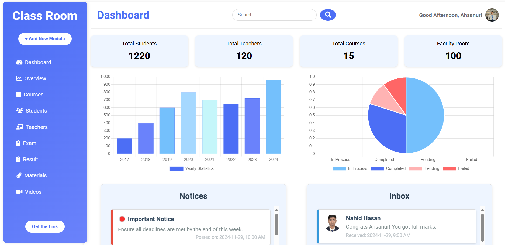
Classroom Analytics Dashboard
Problem: Faculty needed a fast way to scan attendance and scores without spreadsheets.
Solution: Built a responsive dashboard with clear KPIs and drilldowns so instructors can spot trends in under 2 minutes.
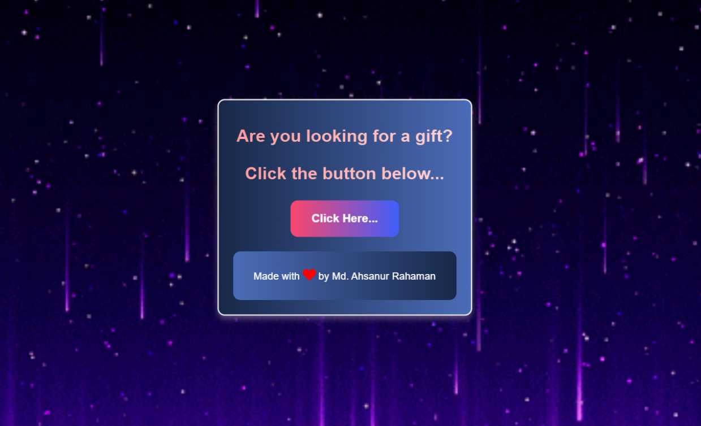
Fun Post
Problem: Friends needed a quick way to drop updates without heavy logins.
Solution: Social-style feed with playful UI, simple posting flow, and responsive cards for mobile-first use.
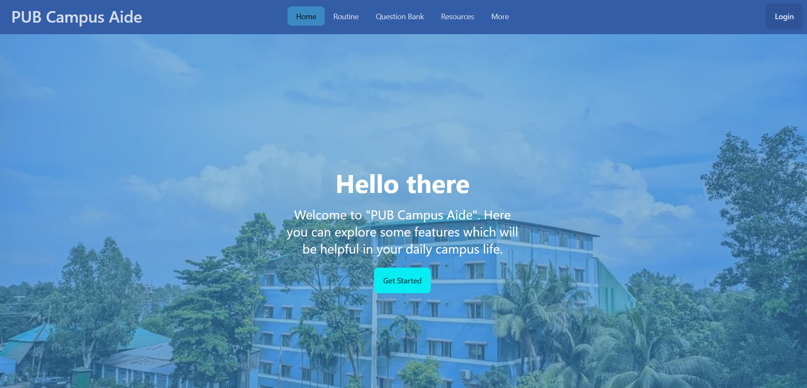
PUB Campus Aide
Problem: Students struggled to find resources and notices in one place.
Solution: Centralized campus aide with streamlined flows for resources, notices, and quick actions tailored to PUB students.
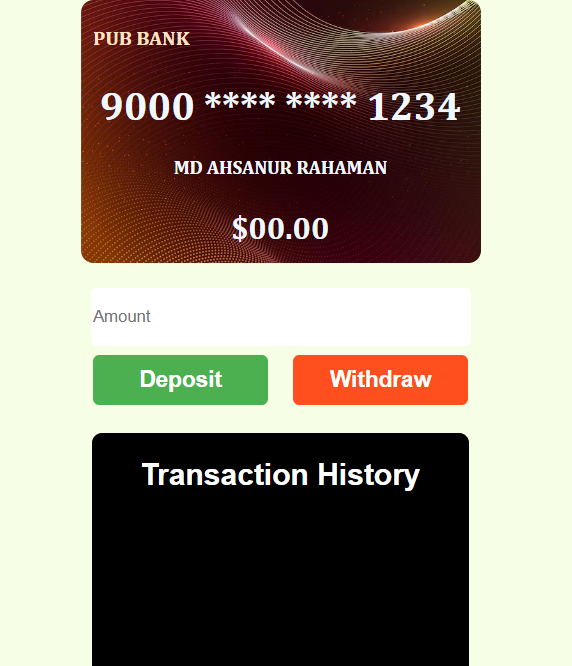
ATM Card Simulator
Problem: Needed an interactive way to teach transaction flows without real banking access.
Solution: Built a secure-feeling simulator with clear error states and confirmations to illustrate withdrawals, deposits, and balance checks.
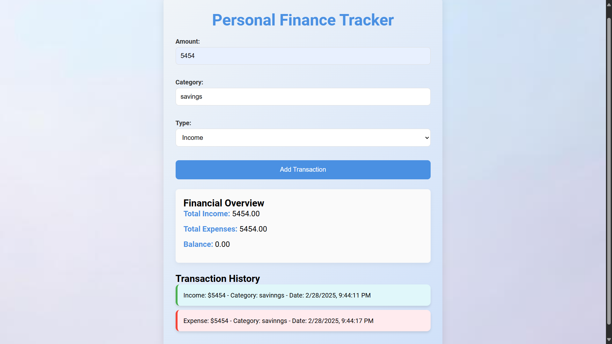
Personal Finance Tracker
Problem: Students wanted a simple, mobile-friendly way to monitor spending.
Solution: Categorized expenses, summaries, and weekly trends with a clean dashboard that works offline-first.
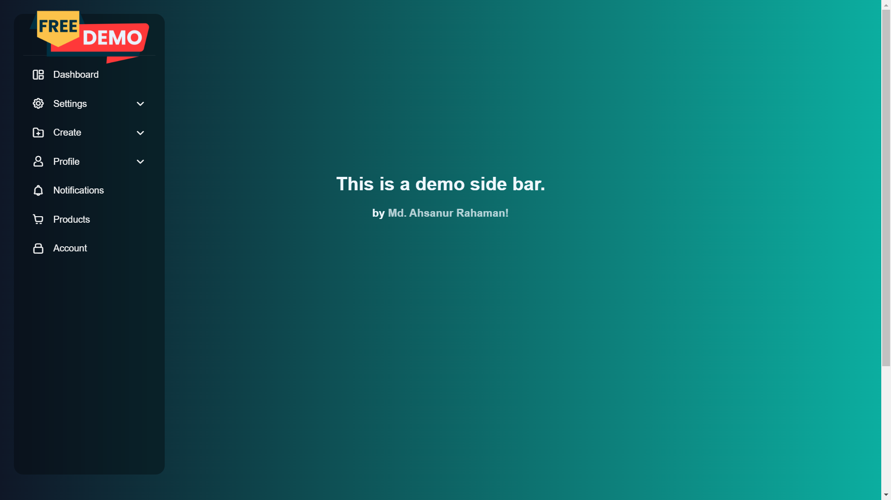
Sidebar UI Component
Problem: Needed a reusable navigation shell with smooth transitions for multiple mini-apps.
Solution: Crafted an accessible sidebar with keyboard support and animated states that can drop into any layout.
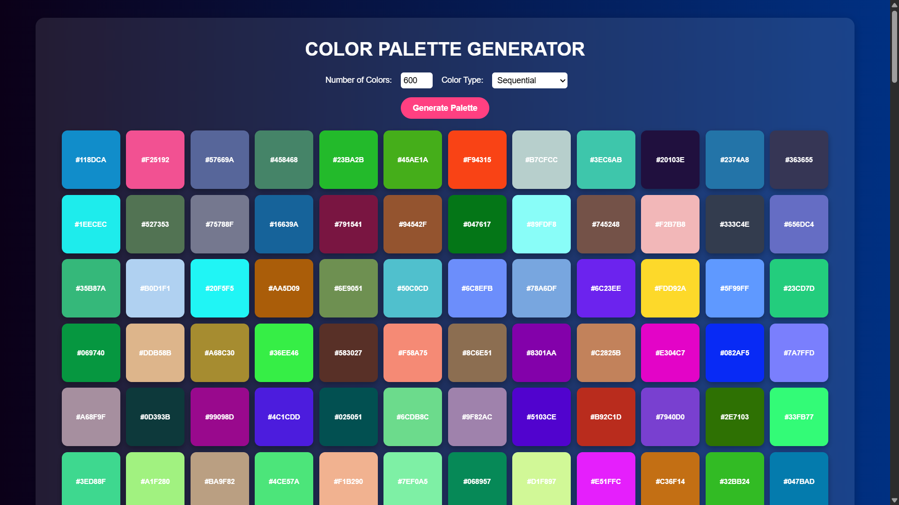
Color Palette Generator
Problem: Designers wanted curated palettes without digging through docs.
Solution: Built a generator with ready-to-copy swatches and harmonious combinations for rapid prototyping.
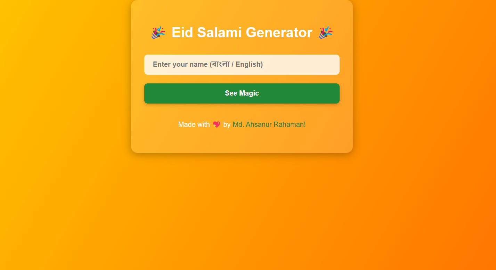
Eid Salami Generator
Problem: Families wanted quick, delightful greetings to share during Eid.
Solution: Built a template-based greeting creator with preset palettes and typography ready for instant sharing.
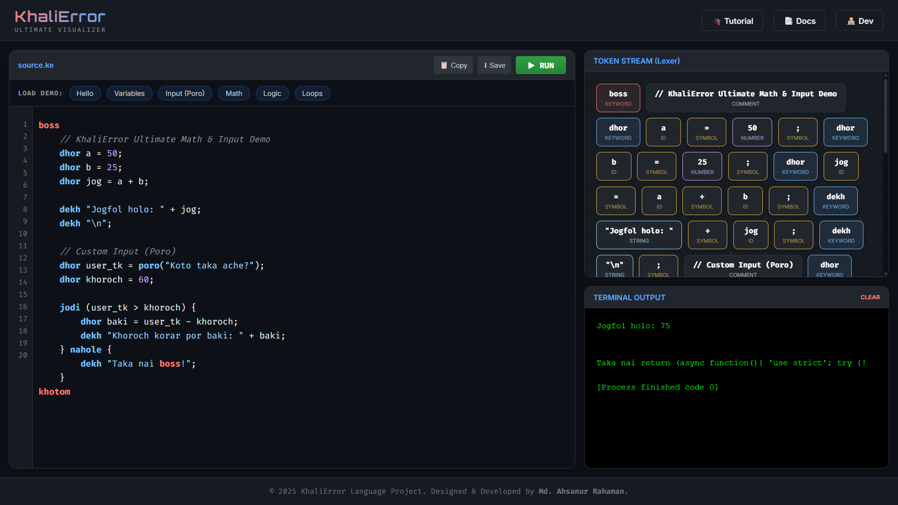
KhaliError Lang
Problem: Needed a playful way to teach programming concepts to beginners.
Solution: Created a language concept site with syntax samples, humor, and quick links so learners stay engaged.
Academic Trajectory
Education & Highlights
Academic qualifications, coursework foundation in computer science and artificial intelligence, and competitive achievements.
B.Sc. in CSE
Pundra University of Science & Technology
Major Focus:
Artificial Intelligence, Biomedical Signal Processing & Generative Deep Learning
Coursework:
Machine Learning, Neural Networks, Biomedical Signals, Data Structures, Algorithms, Discrete Mathematics, Probability & Statistics
Leadership:
Convener, BASIS Students' Forum PUB Chapter · General Secretary, PUB Computer & Programming Club
HSC · Science
Govt. Shah Sultan College
Honors & Awards
Selected Achievements & Competitions
Competitive programming recognitions, hackathon podium placements, and research contributions during undergraduate studies.
1st Runner-up
2023
Beginner's Programming Contest (PUPC)
Demonstrated algorithmic problem solving and rapid debugging under competitive constraints.
Hackathon Winner
2025
Special Category Winner · CSE FEST 2025
Recognized for rapid prototyping and innovative software engineering under hackathon timeframes.
Design Winner
2024
CSE Department Official Logo Contest
Selected as the official department branding symbol organized by the Dept. of CSE, PUB.
Research Contributor & Presenter
2026
IEEE CSDE 2026 & RICRF 2026
Author of two accepted 6-page research papers in EEG signal reconstruction and BCI motor imagery.
Portfolio Deep Dive
Deep Dive
Student leadership milestones, verified credentials & certifications, and academic research experiences.
Convener
Sept 2025 — Sept 2026
BASIS Students' Forum PUB Chapter
Pundra University of Science & Technology
Spearheading student-industry partnerships, organizing tech seminars, and connecting computer science undergraduates with national IT development opportunities through BASIS.
General Secretary
2026
PUB Computer & Programming Club (PUPC)
Department of CSE, PUB
Managing executive operations, structuring weekly competitive programming practice rounds, coordinating beginner onboarding, and organizing inter-university contests.
Vice President (CP Community)
2025
PUB Computer & Programming Club
Competitive Programming Wing
Mentored junior students on data structures and algorithms, organized mock programming contests on online judges, and fostered an active problem-solving culture.
Executive Member
Sept 2024 — Sept 2025
BASIS Students' Forum PUB Chapter
Pundra University of Science & Technology
Collaborated with faculty mentors and student peers to coordinate tech festivals, hackathons, and software showcase workshops.
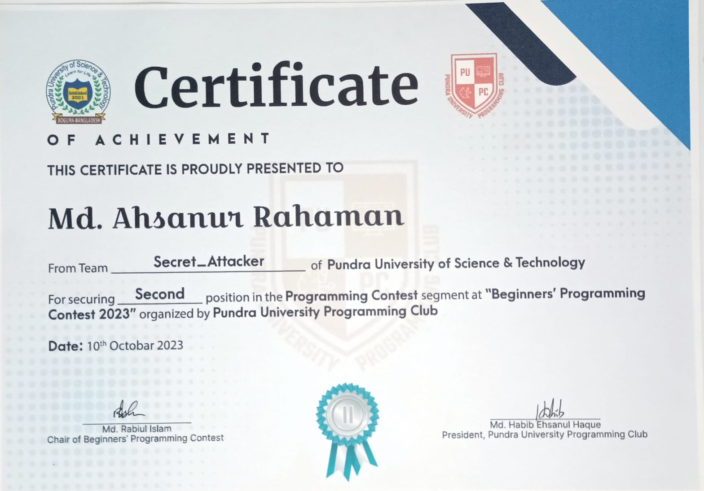
1st Runner-Up • PUPC Beginner Programming Contest 2023.


Run Your First Python Code · OSTAD.

Run Your First Code with JavaScript · OSTAD.

Digital Literacy · FutureNation.
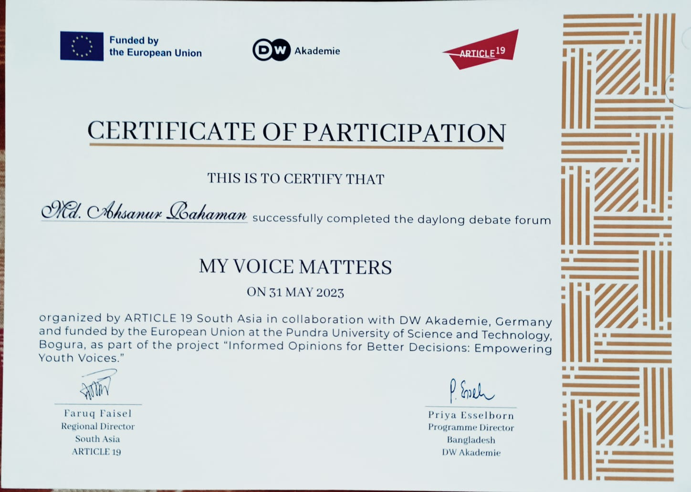
Debate Forum: My Voice Matters · European Union.


Employability Masterclass 005 · FutureNation.

The SDG Primer · FutureNation.
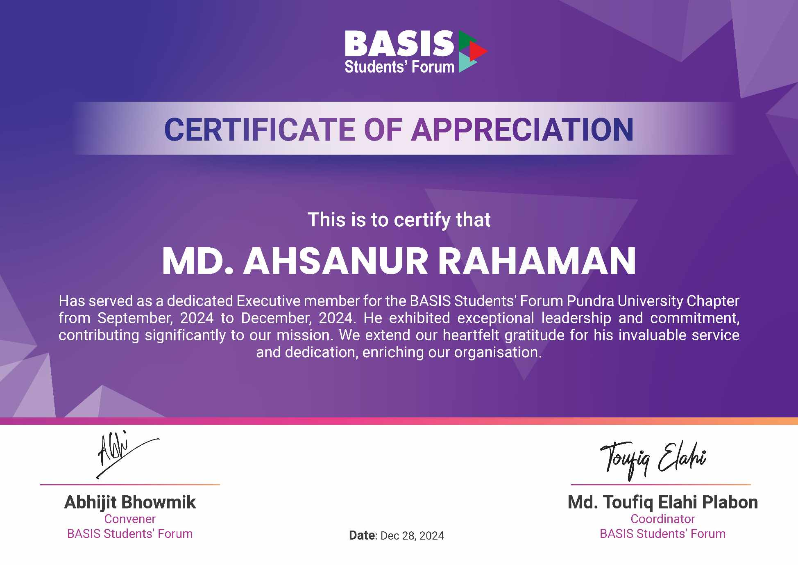
Appreciation · BSF PUB Chapter · BASIS.


Data Analysis with Excel · FutureNation.
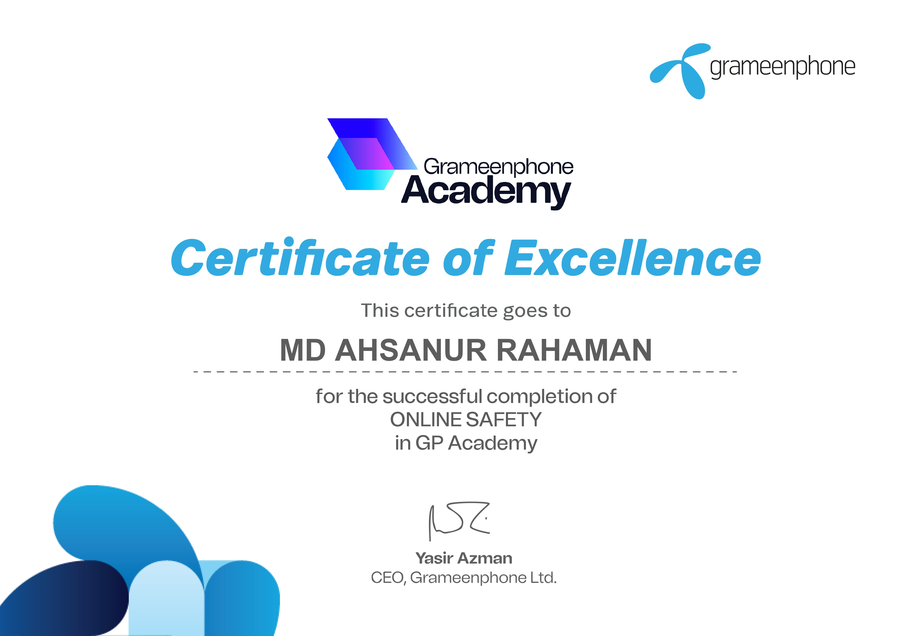
Online Safety · GrameenPhone Academy.

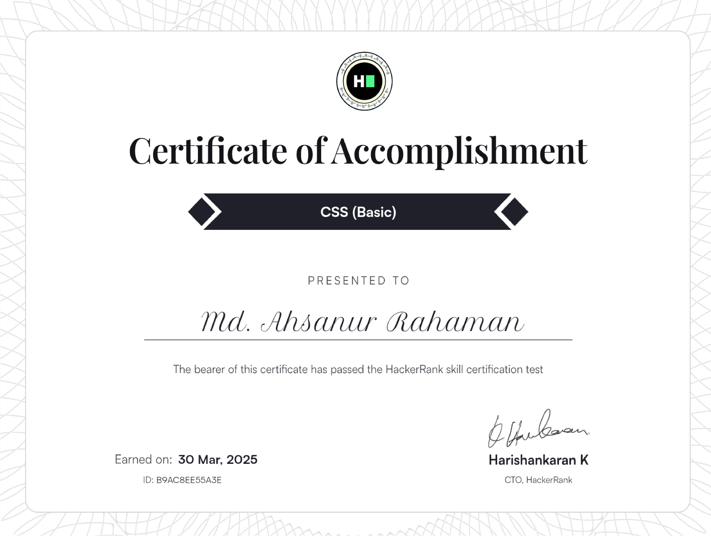
CSS Basic · HackerRank.

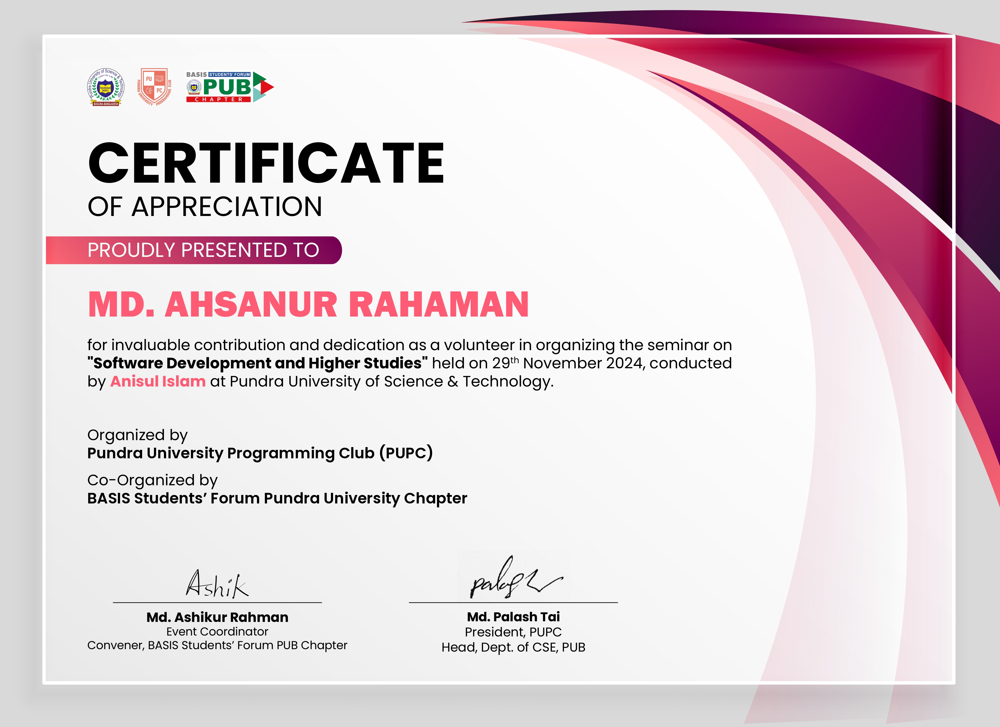
Seminar Volunteering · Software Development & Higher Studies.

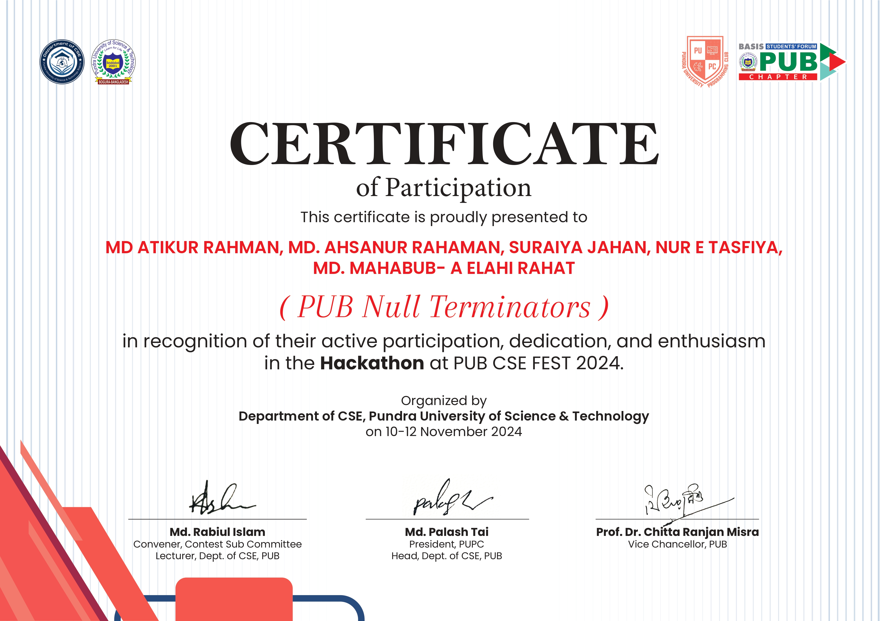
Hackathon · PUB CSE Fest 2024.

Programming Contest · PUB CSE Fest 2024.

Problem Solving (Basic) · HackerRank.
Research
2024 — Present
Undergraduate AI & BCI Researcher
Biomedical Signal Processing & Generative Deep Learning · PUB
Formulating reference-conditioned generative EEG reconstruction frameworks (CycleGAN & DDPM) for stroke rehabilitation motor-imagery BCI and Parkinson's disease diagnostic biomarker discovery. Author of 2 accepted conference papers (RICRF 2026, IEEE CSDE 2026) and 1 under review (ICEEICT 2027).
PyTorch
MNE-Python
CycleGAN
DDPM Diffusion
Scikit-Learn
Leadership & Mentorship
2025 — Present
Competitive Programming Lead & Mentor
PUB Computer & Programming Club (PUPC)
Designing curated problemsets and conducting hands-on algorithm training sessions on graph theory, dynamic programming, and greedy heuristics. Mentoring teams participating in inter-university programming contests.
C++
Algorithms
Data Structures
Codeforces
Problem Solving
Systems & Development
2023 — Present
Full-Stack & Data Prototype Developer
Academic & Independent Systems
Architected and deployed 15+ interactive applications, including real-time web prototypes, interactive data dashboards, and algorithmic utilities deployed on live cloud infrastructure.
JavaScript
Python
Tailwind CSS
Node.js
Firebase
Get In Touch
Let's Work Together
Open to data science projects, ML prototypes, research collaborations, and product design work. Response time: 24 hours.
Phone
+880 1776 890 648
Location
Joypurhat/Bogura, Bangladesh (GMT+6)
Send a Message
I usually reply within 24 hours.